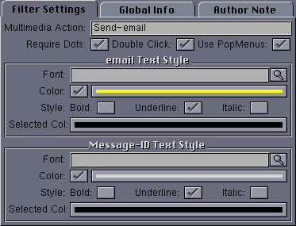

|
User Interface
|
The user interface for this filter looks like this:

The available configuration options are:
- Multimedia Action - This is an action from the
Multimedia
Actions list that will be invoked when an email address is
clicked. The multimedia type is application/X-email (case
sensitive!) The multimedia action may be any user defined action;
for example, to send the article text to an email program such as
YAM.
- Require Dots - If selected, then a string is detected as an
email address or a Message-ID only if the hostname component contains
a dot (.). For example, "user@myhost.com" would be matched, but not
"user@myhost". This can prevent false positives when parsing certain
types of data.
- Double Click - If selected, then a doubleclick is needed to
trigger the default action for this email address or Message-ID.
Otherwise, a single click is sufficient.
- Use PopMenus - If selected, then a popup menu is created for
email addresses and message-IDs allowing the address to be copied to
the clipboard, or any multimedia action defined for the indiciated
type to be executed. Email address have a multimedia type of
application/X-email, and message-IDs have a multimedia type of
application/X-MsgID. Both are case sensitive.
More than one multimedia action may be defined, for example, to send
an article to different email programs.
- email Font - If non-null, this font is used to display the email
addresses.
- email Color - If selected, this color is used to display email
addresses.
- email Style - The text style for displayed email addresses.
- email Selected Col - This color is used to display email addresses
when they are pressed using the mouse.
- Message-ID Font - If non-null, this font is used to display
message-IDs.
- Message-ID Color - If selected, this color is used to display
message-IDs.
- Message-ID Style - The text style for displayed message-IDs.
- Message-ID Selected Col - This color is used to display message-IDs
when they are pressed using the mouse.
Back to Top
|